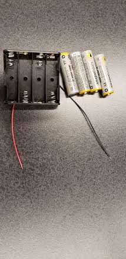
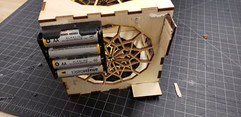
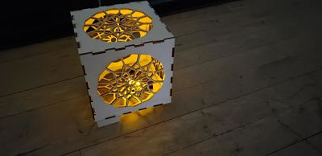

Rotation #10
Our final prjects had to include four of the different processes that we had learned throughout the semester. I created a battery powered,
portable designed lamp. It is light weight and can be taken anywhere because of its long lasting battery. The top is able to come off, and even can store items
inside. I spent about 3 Digital Engineering Class and about 1 hour working on it after school. In total I spent 4 to 5 hours completing my final
project. I learned a lot about trial and error for my different designs for my final project, and I also learned more about the processes I used in my project.
The four process in the project are:
1) CAD
2) Laser cutting
3) Electronics
4) Sodering.
First I used the MakerCase software to aid in creating the parts of the cube. Then, I brought the design into the CAD software CorelDraw.
In Corel Draw I bitmapped the design, and centered it on all six sides of the cube. After designing the pieces, I used 1/8 inch wood on the
laser cutter, and cut out the design.

Wooden Parts for Laser Cutter Design on CorelDraw
Then, I got 4 AA batteries, 2 resistors and 2 LEDs. I used the melted tin of the sodering machine to soder the resistors, LEDs and the power source
together to complete the crucit. One of the issue I had was getting enough voltage to power the lmap with batteries. I had to move from 2 AA batteries to
4 AA battries to power just 2 LEDs. I could have made it brighter with more LEDs if I could have higher voltage.

Once I made sure the cricut was working correctly, I used velcro pieces to attach the battery pack to the bottom of the lamp. I also added small wooden
wooden support pieces of 1/8 inch wood to make sure the lamp could be stable with the battery pack at the bottom. Finally, I glued down the LED
cricut to the bottom inside of the cube, and I glued the enitre cube together. I left the top piece not glued so it is possible to take it off
and even store stuff inside the lamp. I was able to put several processes I learned in the course together, and it showed how much we covered
in just one semester.


Return